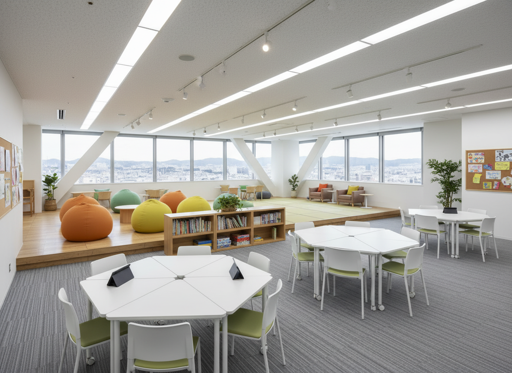
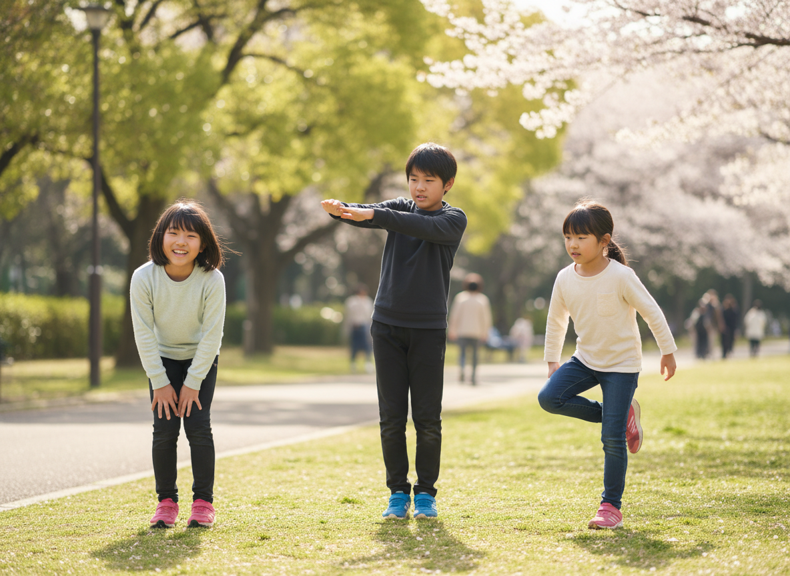
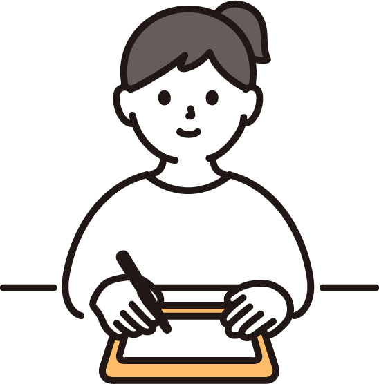
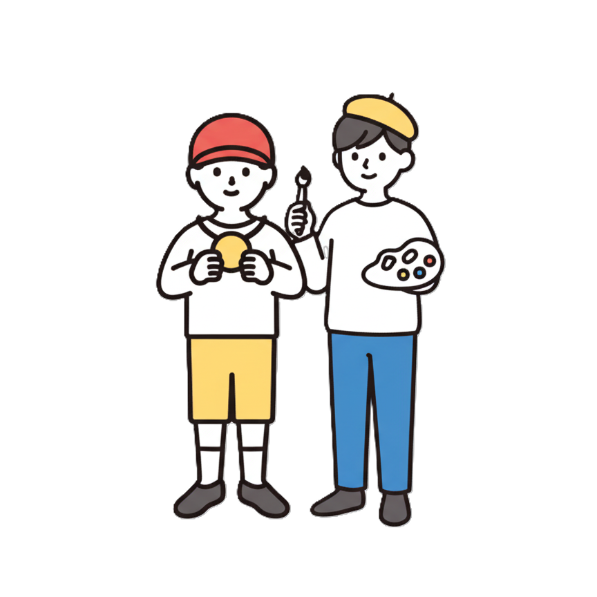
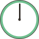
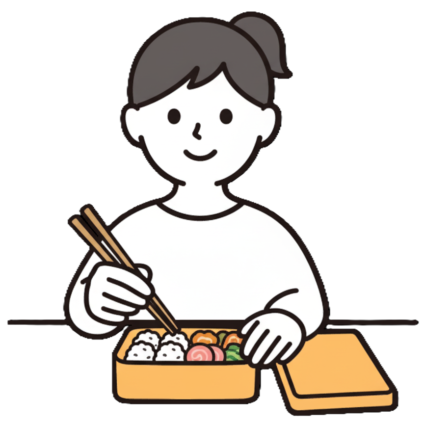
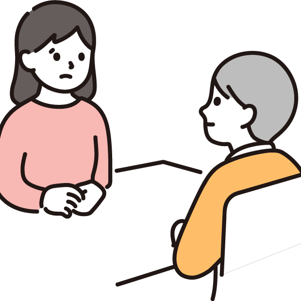
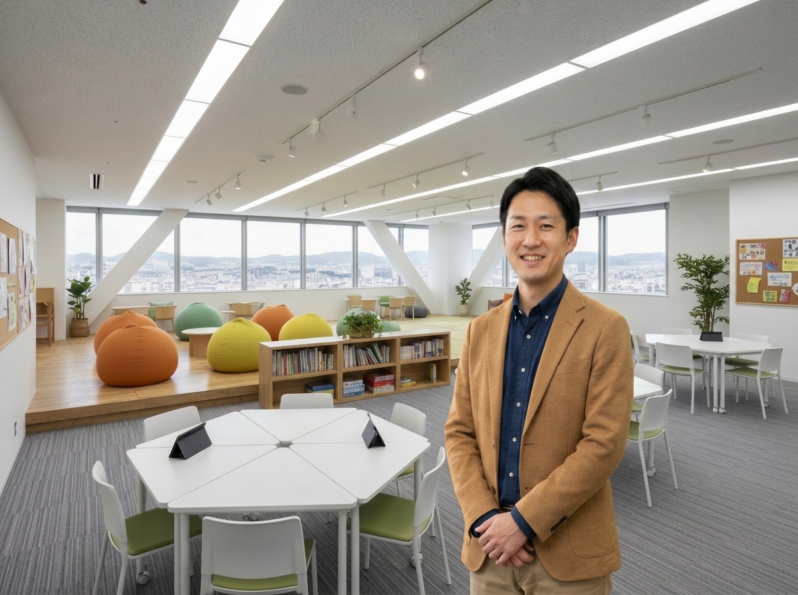
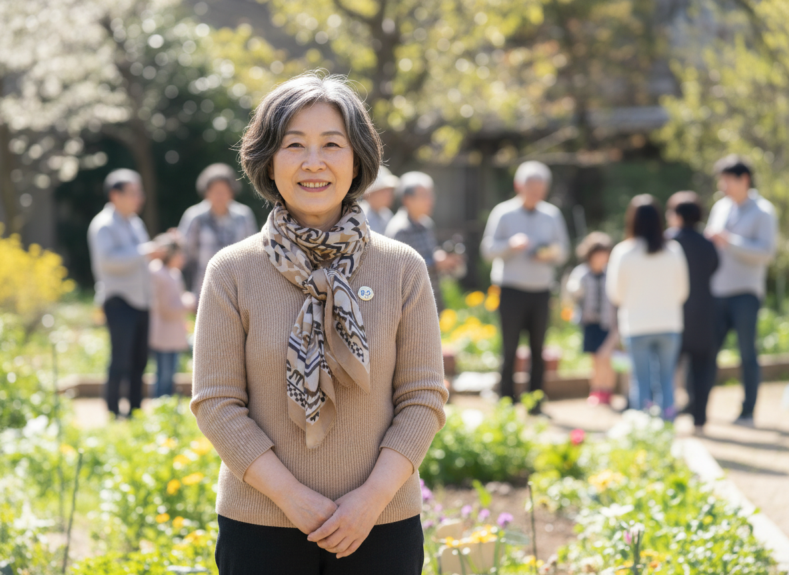

手と手を合わせて
つながる心
学校に行きづらい小中学生とその保護者のための居場所
ABOUT
Te to Teは、不登校の子どもたちとその保護者を支える新たな拠点です。
子どもと保護者が安心して利用でき、つながりを感じられる新しい支援のかたちを築くとともに、学校・地域・行政など関係機関 との連携を深め、多様なつながりの中で一人ひとりに寄り添う支援を実現していきます。
心理的・情緒的な理由で長期に学校へ行けない不登校の子ども(小・中学生；市内在住）を対象に、本人・保護者・学校と相談した上で子どもたちの通室を受け入れています。

こんな想いを抱えていませんか？
朝になると体調が悪くなる…
学校に行きたいけど行けない…
学校以外の場所はないのかな？
Te to Teが大切にしていること
-
Point 1
学校・行政との連携
学校や関係機関と連携しながら、お子さまに合った支援を行います。
-
Point 2
無理に登校を促しません
「学校に戻すこと」だけを目的にせず、心の回復を大切にしています。
-
Point 3
小さな一歩を尊重
その子のペースを大切にし、安心できる居場所づくりを行っています。
SUPPORT
Te to Te が目指す支援
学校生活への復帰や社会的自立を目指します
-

学習支援
-

適度な運動
-

教育相談
一日のスケジュール
9:00
マイタイム
個人活動・自習
学校の教材を持参して自習形式で
学習をすることができます。

11:00
ふれあいタイム
運動・制作
軽い運動や芸術活動を行う時間です。


12:00
お昼休み
お弁当
お弁当を持参してください。

13:00
マイタイム
個人活動・自習
学校の教材を持参して自習形式で学習をすることができます。
14:00
ふれあいタイム/心理相談
運動・制作・相談
軽い運動や芸術活動を行う時間です。
保護者の相談も可能です。

15:00
終了
指導員紹介
3名の教員免許所持者と1名のソーシャルワーカーが在中しています


指導方針
- 指示を避け、質問を待ちます
- 子ども自らの意思決定を待ちます
- 子どもが自分で計画し、実行するのを待ちます
- 児童も保護者の相談も可能です。

FAQ
よくある質問
-
A
かかりません。
-
A
学校の判断により異なりますが、出席になる場合が多いです。
-
A
必要に合わせて社会福祉の提案や家庭訪問などができます。
-
A
本人・保護者・学校と相談した上で子どもたちの通室を受け入れています。